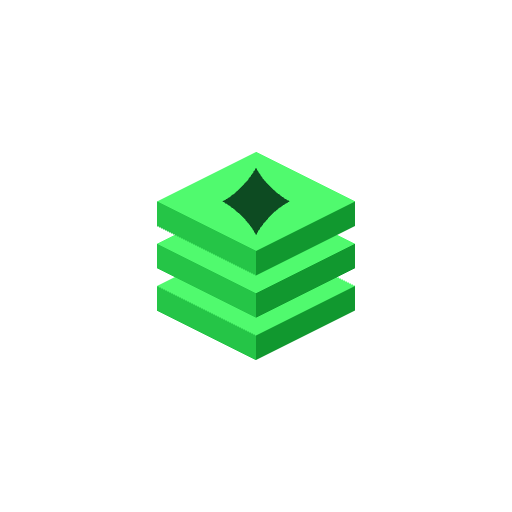
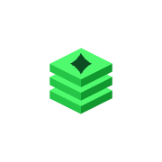
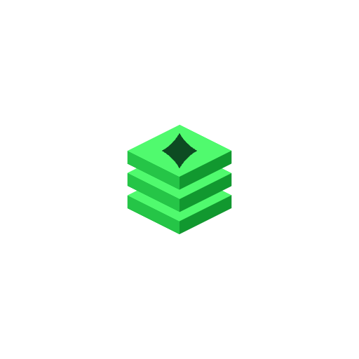
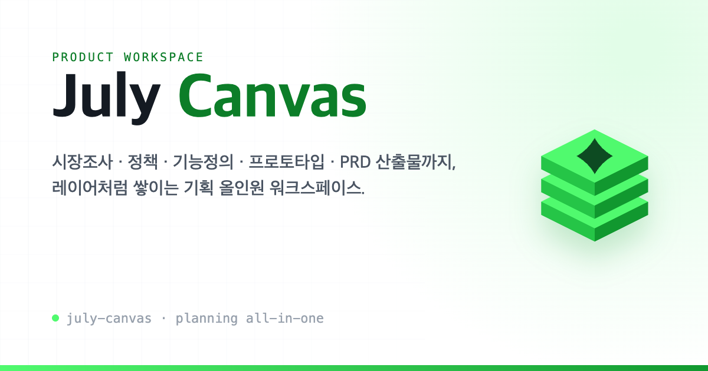

프로젝트 목록 / kake
Lockups
심볼 + 워드마크
워드마크는 Pretendard 800. July는 차콜(다크에선 화이트), Canvas는 그린으로 제품의 그린-퍼스트 톤을 강조합니다.
LOCKUP / LIGHT
LOCKUP / DARK
기획 문서 · 프로토타입 · 산출물이 레이어처럼 쌓이는 3D 캔버스 블록.
그린-퍼스트 입체 심볼 시스템.
세 겹으로 쌓인 isometric 슬랩이 시장조사 → 정의 → 산출의 적층 과정을 표현합니다. 컬러 마크라 라이트·다크 어디서나 반전 없이 동일하게 사용합니다. 상단의 spark는 캔버스 위에서 생성되는 결과물을 상징합니다.
그라데이션·그림자 없이 평면 면 분리만으로 깊이를 만듭니다. 윗면이 가장 밝은 브랜드 그린, 좌·우 측면으로 갈수록 어두워집니다.
워드마크는 Pretendard 800. July는 차콜(다크에선 화이트), Canvas는 그린으로 제품의 그린-퍼스트 톤을 강조합니다.
기존의 깨진 블루 라운드 아이콘을 대체합니다. 밝은 헤더에는 라이트 락업, 드라이브형 다크 사이드바에는 다크 락업을 사용합니다.
16px favicon은 spark를 빼고 2-레이어로 단순화한 favicon.svg를 사용해 또렷하게 유지합니다. 앱 아이콘은 밝고 깨끗한 화이트 타일에 심볼을 얹습니다.

512 · any
180 · apple
512 · maskable심볼은 컬러 그대로. 라이트·다크 동일하게 사용하고, 주변 여백은 심볼 높이의 1/4 이상 확보합니다.
최소 크기를 지키세요. 심볼 24px·락업 28px 이하에서는 단순화된 favicon.svg를 사용합니다.
색·그림자·글래스 추가 금지. 평면 입체 면을 그대로 두고 외곽선·드롭섀도우를 더하지 않습니다.
블루·퍼플·폴더형 금지. 기존 블루 라운드 아이콘과 퍼플 톤은 더 이상 사용하지 않습니다.
링크 공유·소셜 미리보기용 1200×630 OG 이미지. og/og-image.png 로 동봉되어 있고, 워드마크·태그라인만 바꿔 재사용할 수 있습니다.
